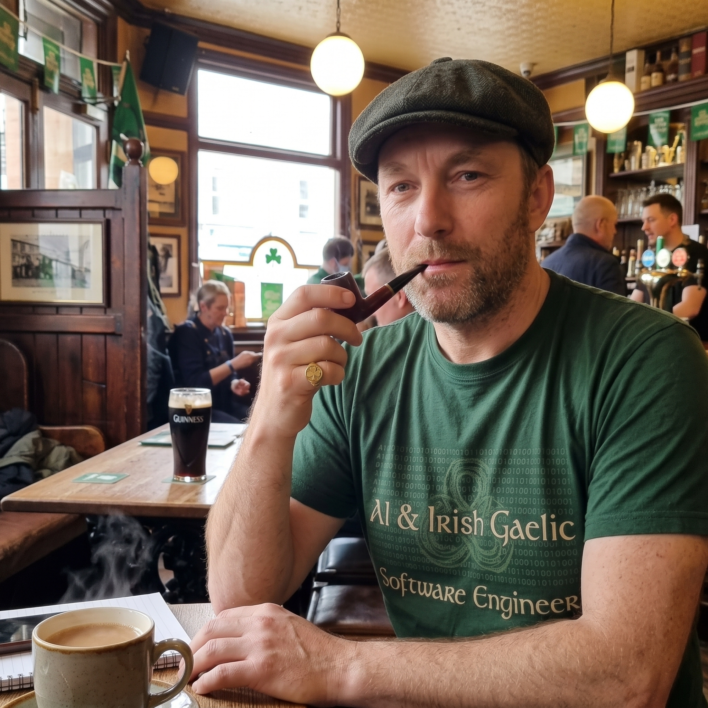

What if Artificial Intelligence was built on Irish logic? 🇮🇪🤖
Story, bud! Grab your cuppa, settle in, and let's explore why Gaeilge is secretly the most tech-native language on the planet.
Wojciech MrukFriday Morning CoffeeInsights #04

Stop 01 Grab a mug
Grand Morning, Team!
Living and working in Ireland, we see Gaeilge on road signs, Irish Rail platforms, and government letters we pretend not to understand until the second notice. Most people assume it's just an ancient Celtic language kept alive by Gaeltacht school trips and exam stress.
But if you look at it through the lens of modern software engineering, cloud architecture, and LLMsLarge Language Models — AI systems like ChatGPT trained on massive text datasets to process and generate natural language.... Irish is surprisingly tech-native. Sure look, ChatGPT acts way more like a lad from Connemara than a Silicon Valley engineer. Let me prove it to you over this morning's coffee.
Stop 02 VSO Syntax
The Action-First Execution Pipeline
In English or Dutch, you write: Subject + Verb + Object ("I write code"). Standard, human-centric, slightly defensive.
In Irish, the grammar strictly enforces Verb-Subject-Object (VSO): "Scríobhaimse an cód". Action first, then Actor, then Target.
// Standard English execution: Subject -> Action -> Target User.execute(Action.WRITE, Target.CODE);
// Irish VSO execution pipeline: Action -> Actor -> Target scríobh(actor: mé, target: an_cód);
"Ah here, don't tell me who you are mate — execute the function first and we'll sort out who did it later!"
In pure IT terms, Irish operates natively like an Event-Driven PipelineAn architecture where system actions are triggered directly by events, evaluating the 'what happened' immediately without waiting for actor state.. It front-loads the execution without waiting to resolve actor context. Now we're sucking diesel!
Stop 03 No Boolean Flags
No "Yes" or "No": Context-Aware LLM Logic
Did you know Irish doesn't actually have simple words for "Yes" or "No"? (Though you might hear formal books mention sea / ní hea, nobody uses them in daily conversation).
If yer manLocal Irish slang meaning 'that guy / that person'. asks you in the pub on Friday: "Did you deploy the build?", you don't say "Yes". You repeat the verb in context: "I deployed."
Or better yet, if he asks: "Will you fix that bug over the weekend?", you reply with the ultimate Irish context response: "I will, yeah."
"I will, yeah" = Boolean FALSE, wrapped in layers of local sarcasm that requires full context evaluation.
This is exactly how TransformersThe deep learning architecture behind modern AI models that evaluates word relationships using contextual attention windows. operate! AI doesn't just evaluate raw BooleanA binary data type that can only hold one of two values: true or false. flags; it evaluates entire contextual prompt windows. OpenAI spent billions discovering what Irish speakers knew all along.
Stop 04 State Management
Pointer Systems ("On Me" Architecture)
In English, you say: "I am angry" or "I am hungry", mutating your object memory directly. In Irish, states are not inherent properties of your base instance. They are temporary attributes attached to you:
"Tá fearg orm" → "Anger is ON me."(Irish)Literally "There is anger on me" — state is expressed as a temporary attribute, not a permanent property.
"Tá ocras orm" → "Hunger is ON me."(Irish)Same pattern: hunger is "on" you, not inside you. The "on me" structure mirrors a pointer reference.
"Tá áthas orm" → "Joy is ON me."(Irish)Joy is an external attribute attached to your session — like a decorator wrapping your object.
"Look at the state of it! It's grand though, the Garbage Collector will detach it later."
This is literally how PointersA variable that stores the memory address of another value rather than the value itself. and DecoratorsA design pattern that allows adding new functionality to an existing object dynamically without altering its structure. work. Emotional state isn't hardcoded into your base object state; it’s an external parameter attached to your current session. When the process finishes (or you get a tea), the Garbage CollectorAn automatic memory management feature that reclaims memory occupied by objects no longer in use. detaches the attribute cleanly without mutating base object state.
Stop 05 Low-Data Engineering
Low-Resource AI & The Ultimate Frontier
From an NLPNatural Language Processing — a field of AI focused on enabling computers to understand, interpret, and generate human language. perspective, Irish is a Low-Resource Language. Training AI models on Irish is tough: there are no massive web-scraping datasets, native speaker training corpora are small, and Irish morphology has complex initial mutations (eclipsis and lenition).
Engineers at Trinity College Dublin (the ABAIR project) are using state-of-the-art synthetic data generation and cross-lingual transfer learning to optimize models on tiny token budgets.
Sure look, next time your code compiles on the first try, remember: you might just be thinking in ancient Irish logic without knowing it.
Stop 06 Interactive Check
How AI Views Irish Logic — 10-Step Evaluator
Test your knowledge step-by-step before your coffee gets cold!
AI_EVALUATOR_TASKQUESTION 01 / 10
Loading question...
Evaluation Complete!
Slán go fóill (Bye for now) & Sláinte (Cheers)! 🍻
Go raibh maith agat (Thank you) for reading. Have a brilliant weekend, enjoy quiet servers, and see you on Monday! Sound!